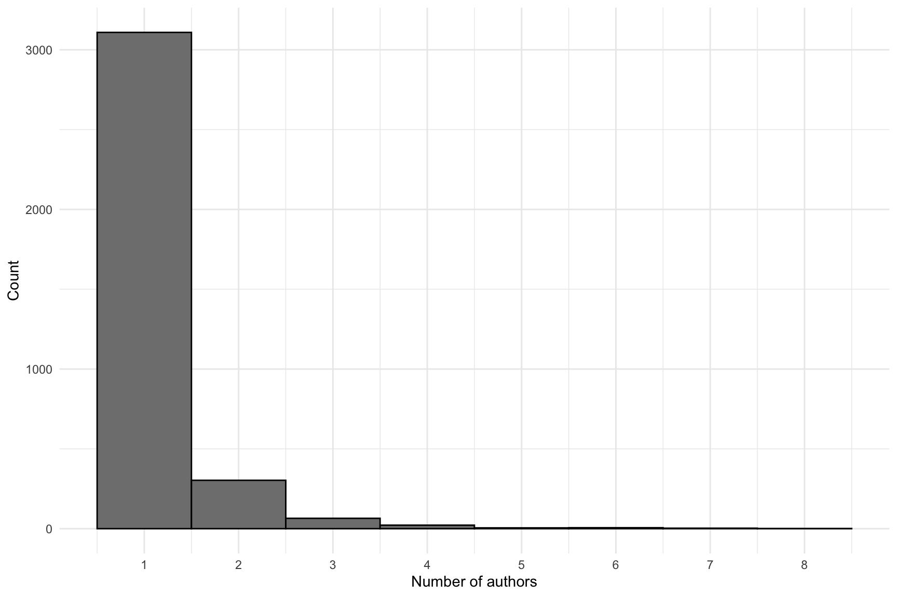
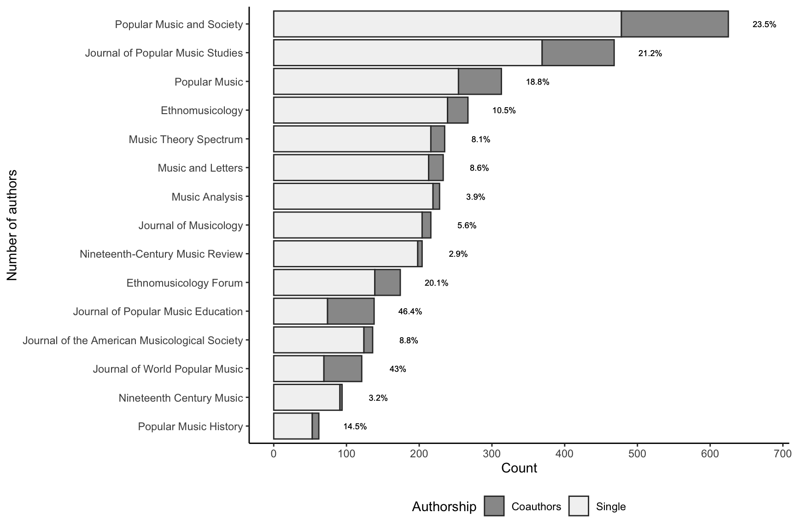
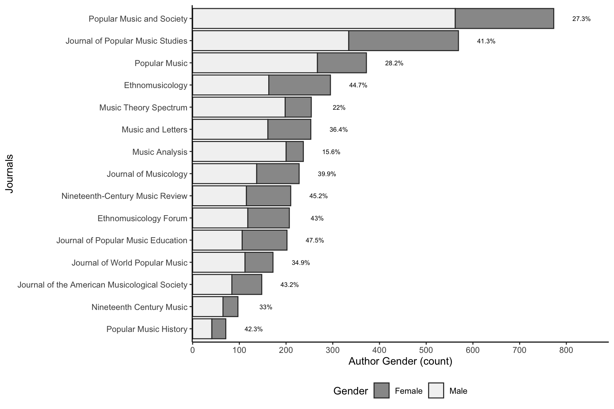
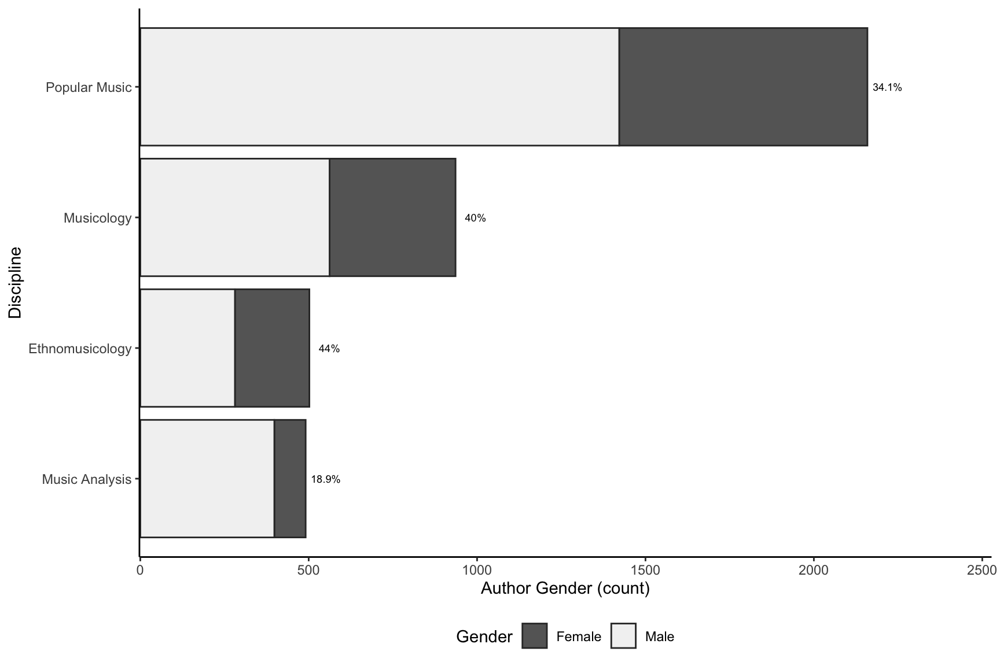
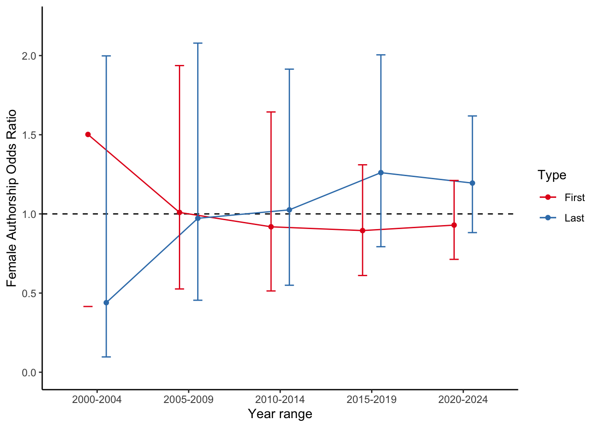

Analysis of gender distribution of authors of journals articles in musicology
T. Eerola, 29/9/2025, update 30/1/2026 after Dana’s manual edits.
This is the first pass to analyse gender distribution of the authors in musicology journals since 2000. The dataset contains 15 journals in musicology that were selected from various Scimago list minus music psychology journals. The journal selection can be altered, but currently these journals are included (primary sub-discipline in brackets):
Journal of the American Musicological Society (Musicology)
Music and Letters (Musicology)
Journal of Musicology (Musicology)
Nineteenth-Century Music Review (Musicology)
Nineteenth Century Music (Musicology)
Music Theory Spectrum (Music Analysis)
Ethnomusicology (Ethnomusicology)
Ethnomusicology Forum (Ethnomusicology)
Music Analysis (Music Analysis)
Popular Music and Society (Popular Music)
Popular Music (Popular Music)
Journal of Popular Music Studies (Popular Music)
Journal of World Popular Music (Popular Music)
Journal of Popular Music Education (Popular Music)
Popular Music History (Popular Music)
This amounted to 4,089 authors.
At the moment, the data is nearly complete although 22% of the affiliations are missing.
Load and preprocess data
source('scripts/load_scopus_datasets.R') # Creates full_names datasetsource('scripts/attribute_country.R') # Add country affiliationssource('scripts/attribute_gender.R') # Adds gender attributions (precalculated with API)source('scripts/create_keys.R') # Add keys for authors and study+authorsource('scripts/clean_citations_and_OA.R') # Process citations and OA statussource('scripts/attribute_gender_diagnostics.R') # Process citations and OA statussource('scripts/export_gender_data.R')
Check manual corrections
Changed first name: 58
Changed last name: 2
Missing affiliations: original data: 1055
Missing affiliations: curated data: 887
Changed gender attribution: 7
Missing affiliations by journal
JOURNAL
N
N_missing
pct_missing
Ethnomusicology
295
13
4.41
Ethnomusicology Forum
207
0
0.00
Journal of Musicology
228
120
52.63
Journal of Popular Music Education
202
1
0.50
Journal of Popular Music Studies
570
31
5.44
Journal of World Popular Music
172
0
0.00
Journal of the American Musicological Society
148
44
29.73
Music Analysis
237
149
62.87
Music Theory Spectrum
254
196
77.17
Music and Letters
253
35
13.83
Nineteenth Century Music
97
78
80.41
Nineteenth-Century Music Review
210
21
10.00
Popular Music
372
58
15.59
Popular Music History
71
1
1.41
Popular Music and Society
773
140
18.11
Summarise
source('scripts/summarise_gender.R') # different summaries
Gender
N
pct
female
1425
0.3485812
male
2663
0.6514188
Gender
M_coauthors
Md_coauthors
SD_coauthors
female
1.461754
1
1.0133122
male
1.399549
1
0.9563893


Warning: Removed 15 rows containing missing values or values outside the scale range
(`geom_text()`).

Warning: Removed 4 rows containing missing values or values outside the scale range
(`geom_text()`).

Number of coauthors:
median: 1
mean: 1.163
sd: 0.548
max: 8
[1] “How many authors can be attributed?” [1] 0.7228474
Warning: Some values were not matched unambiguously: UK, UNITED STATES
Continent
n
female
male
female_prop
male_prop
Africa
48
17
31
0.3541667
0.6458333
Americas
1450
564
886
0.3889655
0.6110345
Asia
186
52
134
0.2795699
0.7204301
Europe
1029
370
659
0.3595724
0.6404276
Oceania
238
85
153
0.3571429
0.6428571
Unknown
1137
337
800
0.2963940
0.7036060
All
4088
1425
2663
0.3485812
0.6514188
Quantify roles
Using the odds ratio but note that there are relatively few coauthors in the data.
source('scripts/quantify_authorship.R') # use Odds
Odds_ratio
CI
CI_low
CI_high
name
0.83
0.95
0.72
0.96
Single
1.26
0.95
1.02
1.56
First
1.06
0.95
0.77
1.46
Coauthor
1.12
0.95
0.91
1.39
Last

[1] “5-year growth rate of female authorships:”
Type
AAGR
First
-14.41
Coauthor
-15.45
Last
18.28
source('scripts/citations.R') # Citations and genderprint(knitr::kable(citestats_all, digits =2, caption ='Citations across all authors'))
Citations across all authors
Gender
Md
M
Q75
CI_lower
CI_upper
female
2
5.86
7
2
3
male
3
6.70
8
2
3
print(knitr::kable(stats_all))
statistic
p.value
parameter
method
5.001684
0.0253227
1
Kruskal-Wallis rank sum test
source('scripts/open_access.R') # OA and genderprint(knitr::kable(author_OA, digits =2, caption ='Open access across all authors'))
Open access across all authors
Odds_ratio
CI
CI_low
CI_high
Type
1.14
0.95
0.95
1.37
First
1.10
0.95
0.54
2.24
Co
0.95
0.95
0.60
1.51
Last
Quantify citations and gender
Probably not relevant quantity for these disciplines, but just to see if there are differences.
source('scripts/citations.R') # Citations and genderprint(knitr::kable(citestats_all, digits =2, caption ='Citations across all authors'))
Citations across all authors
Gender
Md
M
Q75
CI_lower
CI_upper
female
2
5.86
7
2
3
male
3
6.70
8
2
3
print(knitr::kable(stats_all))
statistic
p.value
parameter
method
5.001684
0.0253227
1
Kruskal-Wallis rank sum test
OA and gender?
source('scripts/open_access.R') # OA and genderprint(knitr::kable(author_OA, digits =2, caption ='Open access across all authors'))
Open access across all authors
Odds_ratio
CI
CI_low
CI_high
Type
1.14
0.95
0.95
1.37
First
1.10
0.95
0.54
2.24
Co
0.95
0.95
0.60
1.51
Last
Geographical distributions
Do some basic summaries of geographical distributions. Start with countries with most publications overall.